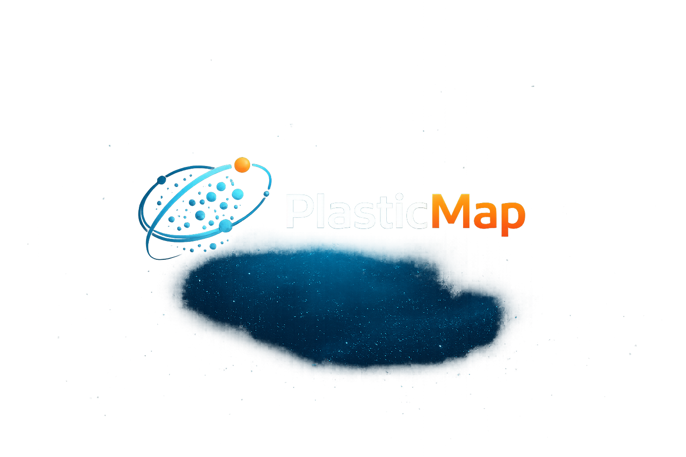

MAPEANDO AS ROTAS INVISÍVEIS DOS MICROPLÁSTICOS
Dados de satélites em tempo real para rastrear a dispersão atmosférica de microplásticos ao redor do globo.

Dados de satélites em tempo real para rastrear a dispersão atmosférica de microplásticos ao redor do globo.